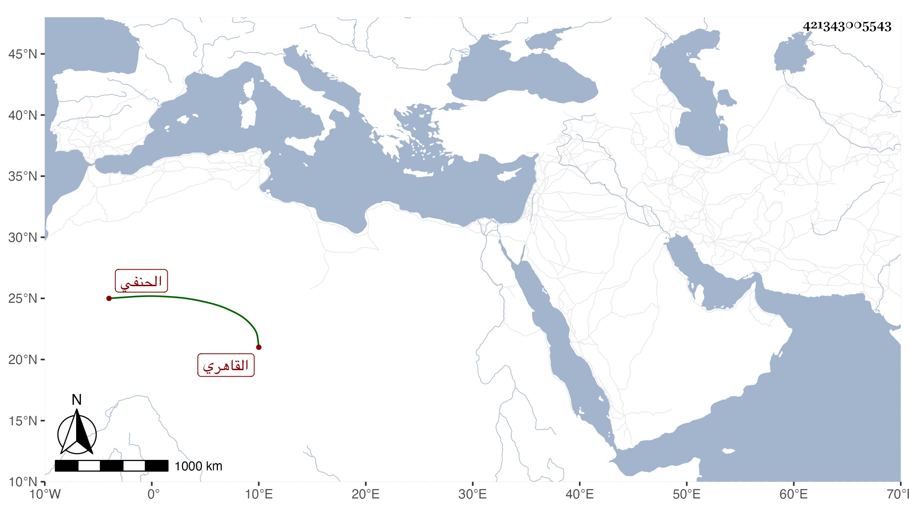

0902Sakhawi.DawLamic.ITO20230111-ara1.EIS1600.421343005543
Biography ID: 421343005543
إبراهيم بن يوسف بن علي البرهان أبو إسحاق القاهري الحنفي ويعرف بابن العداس . ولد تقريبا في العشر الأوسط من رمضان سنة إحدى وأربعين وسبعمائة واشتغل بالفقه والقراآت وغيرهما وقرأ على أكمل الدين شرحه للهداية وغيره وعلى التقي بن البغدادي الصحيحين على الجمال بن خير أولهما وفضل بحيث ناب في القضاء وحدث سمع منه الزين رضوان والشمس محمد بن علي بن محمد بن عبد الكريم الفوي وروي عنه بالإجازة التقي الشمني . مات في ليلة الاثنين سابع جمادى الآخرة سنة ثمان . ولم يذكره شيخنا .
